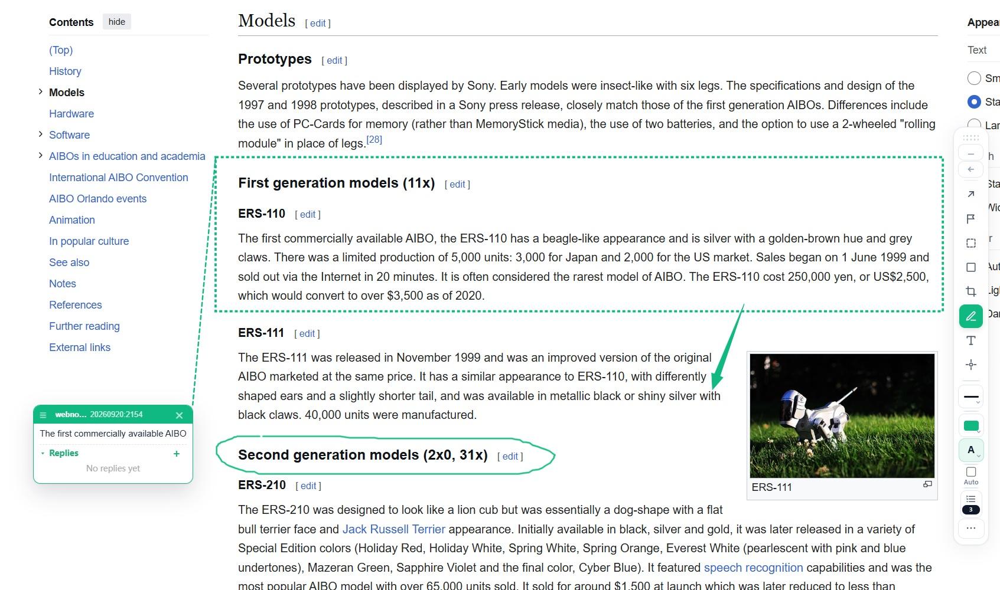
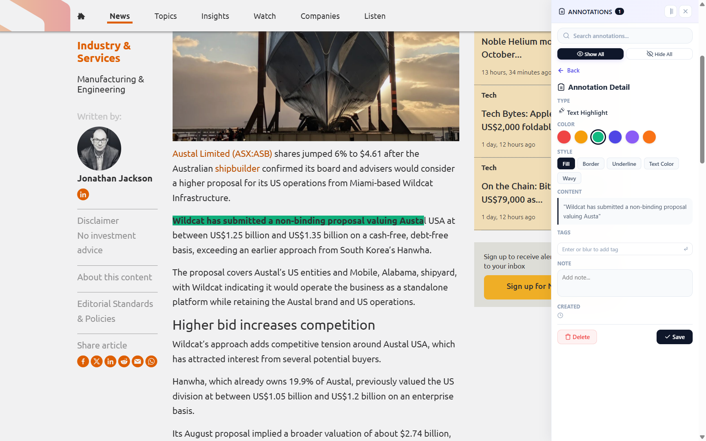
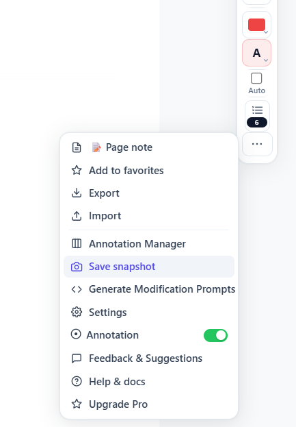

网页标注工具
浮动控制面板里的每一件工具：高亮、绘图、截图、批注，以及帮你管理当前页面标注的列表抽屉。
控制面板一览
Sagitnote 在页面上激活后，控制面板悬浮于内容之上。拖动左缘把手可移到任意位置；点 — 可最小化成小标签，阅读时不再遮挡。

| 部位 | 作用 |
|---|---|
| ⠿ 把手 | 拖动可在页面上任意移动面板；拖到屏幕右缘或下缘过半时，面板会自动切换横排/竖排布局。 |
| — 最小化 | 把面板收成小标签，再点恢复。 |
| ↶ 撤销 | 撤销刚创建的标注（也可用 Ctrl+Z）。 |
| 工具按钮 | 箭头、旗帜、矩形框、图片矩形、页面截图、自由线条、文字批注、元素标记。 |
| 线宽 | 绘图工具的线条粗细（1–5 px）；也决定文字批注的字号。 |
| A 颜色 | 新标注使用的当前颜色。 |
| 样式组 | 文字高亮样式：填充、边框、下划线、波浪线、字色。 |
| 自动 | 划选文字后自动高亮。 |
| 浏览（数字） | 打开当前页面全部标注的列表抽屉。 |
| 💬 弹窗开关 | 一键关闭页面上所有已打开的批注卡片（见批注弹窗）。 |
| ⋯ 更多 | 整页批注、收藏、导入导出、标注管理、分享、快照、设置、帮助。 |
文本高亮
在页面上选中任意文字，选区旁会弹出颜色选择条。点一个颜色圆点，高亮立即按面板样式组当前选中的样式生效；选择条会保持打开，点亮其中的笔按钮即可马上给这条标注写批注、加标签，并选择显示方式（悬停显示或常显）。点击已有高亮会弹出快捷面板：换颜色、编辑批注（笔）或删除；要换样式，打开浏览，在该标注的标注详情里修改。
面板样式组提供的高亮样式：
- 填充 — 经典的荧光笔效果。
- 边框 — 给选区加一圈矩形边框。
- 下划线 — 文字下方一条直线。
- 波浪线 — 文字下方一条波浪线（适合标"待再看"）。
- 字色 — 直接改变文字本身的颜色。
读长文时：先打开自动，之后只管划选——每段选区都会按当前颜色和样式自动高亮，省去每次点选。用完记得关掉。

高亮在刷新后依然存在：只要页面内容还在，Sagitnote 会在你再次访问时自动恢复这些高亮。
绘图工具
在面板上点选一个工具，然后到页面上操作。再次点击该工具（或改选其他工具）即可收起——同一时间只有一个工具生效。工具生效时，鼠标所指的元素会出现蓝色描边，方便精确对准。
每个图形都是一条标注——会出现在列表抽屉里，可编辑、刷新后保留。
箭头
从起点拖到箭头要指向的位置。适合指出图表、段落或版面中的某个具体位置。
旗帜
在页面任意位置点击即可插上一面小旗。点击旗帜可以附加或查看批注——是长页面上的可视化书签。
矩形框
拖动画出一个矩形框，圈住任何内容——一段话、一个价格、一张照片——表示"看这里"。
图片矩形
只对图片生效：启用该工具后，把鼠标移到图片上（光标变为十字），在图片上拖拽即可画出一个实线矩形框。Sagitnote 会记住这张图片——开启设置里的自动保存图片（默认开启）时还会把图片存到本地，即使图片日后失效或变更，你的标注依然稳定。
页面截图
拖拽框选页面的任意区域，Sagitnote 会把它截成图片批注。如果框选区域超过一屏，会自动滚动拼接截取，长区块也能一次框完。截图随标注一起保存，在列表抽屉和标注管理器中显示缩略图。
自由线条
用鼠标或手写笔随手画——圈个错别字、勾个重点、画个示意图都行。
文字批注
在页面上点一个位置然后输入。批注会钉在你放置的地方，像一张便利贴。
元素标记
在页面上移动鼠标，Sagitnote 会框出完整的元素——按钮、图片、卡片、链接。点击即标记该元素。相比手绘图形，元素标记在页面布局变化时更稳固。

颜色与样式
面板的颜色按钮打开调色板——红、琥珀、绿、蓝、紫、橙，高亮与绘图通用，全部六色对所有用户开放。你还可以在设置（调色板）里给颜色改名（最长 12 个字符）、调整色值，建立自己的标注配色体系。
线宽（1–5 px）控制绘图的线条粗细、箭头大小和矩形边框——同时也决定文字批注的字号。它不影响文本高亮；文本高亮的样式由样式组（填充、边框、下划线、波浪线、字色）决定。上次使用的颜色与样式会被记住，用于下一次标注。
批注弹窗
带批注内容的标注会显示一张批注卡片。点卡片右上角的 ✕ 可将其收起——本次访问内不再自动弹出，标注本身不受影响。
卡片收起后，标记上会留一个小气泡图标：
- 文字高亮 — 气泡紧跟在高亮文字之后。
- 图形标记（箭头、矩形框、截图等）— 气泡出现在标记旁（多为右上角）。
- 图片批注（整图标注）— 复用图片旁的画笔图标。
点击气泡即可重新打开批注；桌面设备上悬停气泡还能快速预览内容。重新保存标注也会让卡片重新出现。
想一次清空所有卡片？工具栏上的 💬 弹窗开关可一键关闭页面上所有已打开的批注卡片——该开关状态会被记住。
标注列表抽屉
浏览按钮（显示当前页面的标注数量）打开抽屉——当前页面的标注工作台：
- 搜索 — 按批注内容过滤标注。
- 列表 — 带类型图标的标注清单，点击一项可跳转到页面上的对应位置。
- 全部显示 / 全部隐藏 — 一键切换页面上所有标注的可见性。
- 编辑 — 打开标注详情：换颜色或样式、加标签、写批注，也可以删除。
在设置中可以选择抽屉的打开方式：推屏压缩页面腾出空间，覆盖则让抽屉浮在页面之上；抽屉头部的按钮也能随时就地切换，选择会被记住。


更多（⋯）菜单
更多菜单汇集了页面级操作：
| 菜单项 | 作用 |
|---|---|
| 📝 整页批注 | 给整个页面写一条自由批注——给下次访问留个总结或提醒。 |
| 收藏 | 把页面加星，方便在标注管理器中找到。 |
| 导出 | 把当前页面的标注（含页面内容）导出为文件。 |
| 导入 | 从导出文件中导入标注。 |
| 标注管理 | 打开完整标注库——所有页面、文件夹与设置。 |
| 分享批注 | 把本文档的标注通过链接分享给他人（免费版与 Pro 均可用）。 |
| 保存快照 | 保存页面的快照副本，即使原页面变化，内容也被留住。 |
| 生成页面修改提示词 | 把页面上的全部标注整理成结构化提示词——把反馈交给开发者或 AI 编程工具时很方便。 |
| 设置 | 打开扩展设置。 |
| 标注开关 | 临时显示/隐藏全部 Sagitnote 标注。 |
| 反馈与建议 | 告诉我们哪里好用、哪里不好用。 |
| 帮助文档 | 打开本帮助文档。 |
| 升级 Pro Pro | 升级套餐、查看额度、查看加购预览。 |
| 登录 | 未登录时显示，进入登录/注册页。退出登录请用设置页或标注管理器。 |

撤销与删除
手滑了？面板上的↶ 撤销按钮可以连续撤回最近创建的标注（也可用 Ctrl+Z），直到撤销栈清空。注意撤销只针对"创建"——删除操作不可撤销，需要删除标注时用标注自身的快捷面板或列表抽屉里的删除按钮。